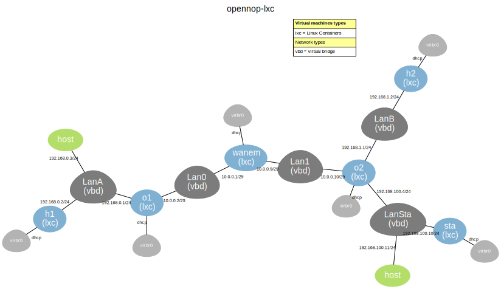

Opennop-SoloWAN demonstration virtual scenario
Welcome to OpenNOP-SoloWAN demostration scenarios. This tutorial will show you how to interact with the virtual machines that made the simple virtual test scenario
created to test OpenNOP-SoloWAN deduplication algorithm.
SoloWAN is a project of the Center for Open Middleware (COM) of Universidad Politécnica de Madrid which aims to experiment with open-source based WAN optimization solutions.
OpenNOP-SoloWAN is an enhancement to Open Network Optimization Platform (OpenNOP) developed to add it deduplication capabilities. Basically a new module has been created that implementes a modern dictionary based compression algorithm.
This demo scenario has been created using Virtual Networks over linuX (VNX).
Requirements
The OpenNOP-SoloWAN demo scenario is provided as a stand-alone Lubuntu 14.04 virtual machine in OVA format. To run it you have to download it from
here and import it from inside VirtualBox or VMware. The virtual machine needs at least 2 Gb of main memory and 8 Gb of disk to run. To best view the demo a full HD size monitor (1920x1080) is recommended.
Demo scenario
The figure shows the demo scenario topology, which is made of two client/server machines (h1 and h2), two WAN optimizers (o1 and o2), a WAN emulator and management server (sta). The virtual scenario has been created and automated using VNX in combination with light virtualization (LXC) machines. By default, the WAN is emulated as a 10 Mbps link with a 20ms one-way delay.
h1 and h2 both have HTTP and FTP servers ready for testing. In fact two HTTP (ports 80 and 8080) and two FTP (ports 21 and 2121) servers run on each machine. Only the traffic sourced or destined to ports 80 and 21 is compressed by WAN optimizers.
The scenario can be started with three different configurations:
- Optimizer-in-the-Network (oitn), with the OpenNOP-SoloWAN optimization software running on o1 and o2 virtual machines, or
- End-to-End (e2e), with the optimization software running inside hosts h1 and h2.
- Optimizer-in-container (docker), with the optimization software running inside docker containers on hosts h1 and h2.

Testing OpenNOP-SoloWAN
To start the demo scenario:
- Start the virtual machine form VirtualBox management console. Once started, change it to full screen or at least maximize the desktop window.
- Start the virtual scenario by any of this two methods:
- Double click on the “Solowan (start demo)”, "Solowan (start e2e demo)" or "Solowan (start docker demo)" icon on the desktop.
- Open a terminal using the application menu or the icon in the task bar, go to the demo directory and execute the start script:
$ cd demo
$ ./start-solowan-demo # use "start-solowan-e2e-demo" for the end-to-end configuration.
# use "start-solowan-docker-demo" for the docker configuration.
Once the demo has started completely (you should see all the virtual machine consoles on the left part of the screen and a firefox with three tabs on the right), login to h1 virtual machine console using user/password: root/xxxx
Once inside the virtual machine, execute the following command:
# solowan-test
Choose option 1 to download a file from h2 server (you can get a list of files in the server with option 3). Try, for example, with random1-10M.out file, which is a file with a random content (no redundancy inside it). You will see that no compression is applied the first time it is transmited. In the dashboard you will see that the traffic that enters and exists the optimizers is the same.
Download the same file again. This time you will see that the download time is highly reduced, as the file content has been previously cached in O2. The dashboard will show that the traffic in the WAN remains constant, but the traffic in LANs has increased.
Download a different file, for example, redundant1-10M.txt. As this is a file with high redundancy you will see that even the first time it is transmited it is highly compressed. You can change the port to 8080 in order to see how the same file is transmitted without compression.
Experiment by changing the number of repetitions, the procotol to ftp or downloading other files. You can also automatically download a list of files by choosing option 3. Take into account that the size of the dictionaries in optimizer is limited to 32768 packets and the algorithm implemented caches all packets sent.
Changing scenario configuration
To easily change the optimizers configuration and the WAN emulation parameters, you can use the solowan-conf tool. Just open a new terminal and:
# cd demo
# solowan-conf
The tool will show the options available to change optimizers and WAN parameters as well as check the status of the optimizators and the ssh tunnel. There are two modes:
- Non Interactive: In this mode the parameters are passed in the command line and commited to the scenario.
Usage: solowan-conf [-x sceneario.xml] -m optim -p -v
solowan-conf [-x sceneario.xml] -m wanem -p -v
Options: -x -> scenario xml file.
-m -> mode: optim (change opennop configuration parameters), wanem (change wanem configuration parameters).
-p -> parameter name. thrnum, num_pkt_cache_size, pkt_size, fp_per_pkt, fps_factor for optim mode. BW, DELAY, LOSS for wanem mode.
-v -> parameter value.
Examples:
# To change "thrnum" parameter to 2
solowan-conf -m optim -p thrnum -v 2
# To change "BW" parameter to 100Mbits
solowan-conf -m wanem -p BW -v 100
Interactive mode. In this mode a menu is shown. You browse the options to select the desired action. The options are:
- Change optimizer config parameters. The parameters that can be changed are thrnum, num_pkt_cache_size, pkt_size, fp_per_pkt, fps_factor.
- Change WANEM config parameters. The parameters that can be changed are BW, DELAY and LOSS.
- Check opennopd status. Show the actual status of the optimizers specifying if they are started or not and the their size in memory.
- Check ssh tunnel status. Show if the ssh tunnel is established or not.
- Establish ssh tunnel. Establish the ssh tunnel between both optmimizers.
Do not forget to select option "Save values and commit changes to scenario" after modifying the configuration.
Contact